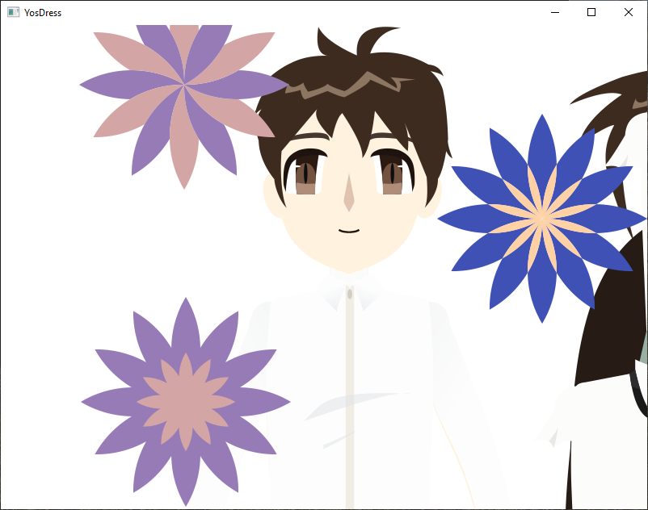
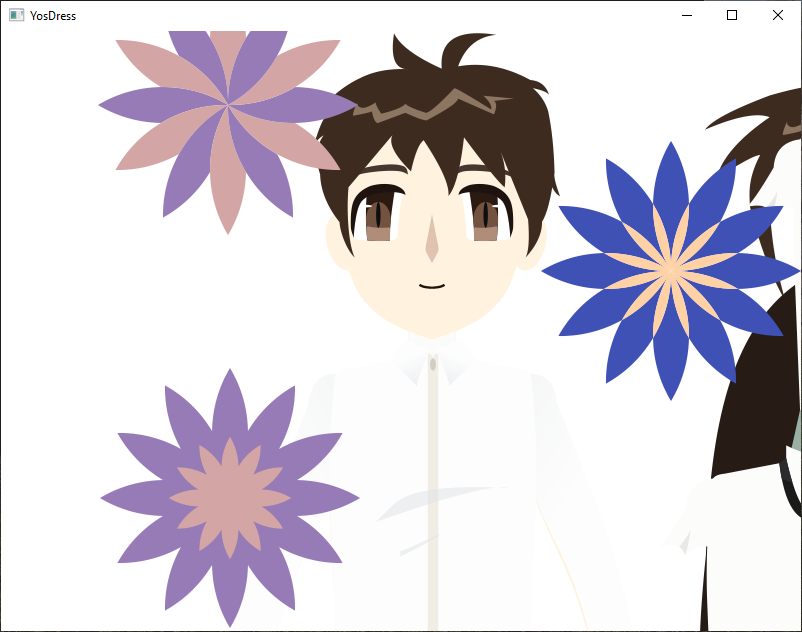

Play Digital
Play Digital
A quiet digital space to dress, observe, and pause.
The digital version of MYSELF is free and available as an early experiment. It allows you to dress and observe the characters at your own pace, without pressure or objectives.
This version does not replace the physical experience. The digital space exists to observe, not to replace touch.
Gameplay Preview
 



Current version: yosdress-beta-v0.1
Information
- Status: Beta
- Built with: C++
- Platform: Windows 10 or later
- License: MIT License
- Category: Game
This project is developed slowly and intentionally. Bugs and unfinished elements are part of the process.